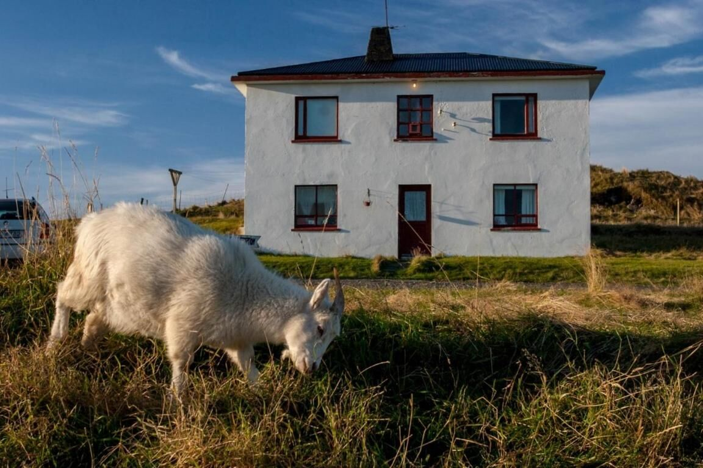
Gamla íbúðarhúsið
10 gestir í 4 tveggja manna herbergjum og 2 eins manns herbergjum, baðherbergi á hverri hæð, gestaeldhús.
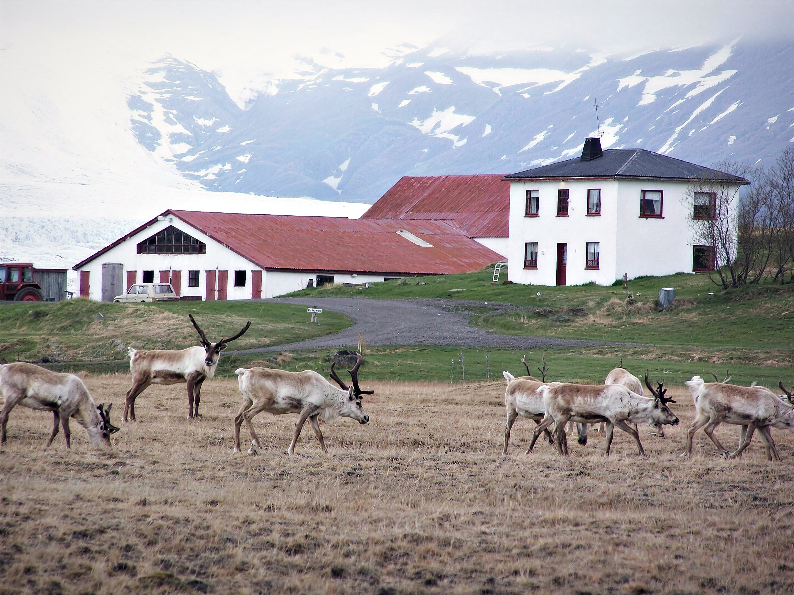
Mýrar · 781 Hornafjörður · fjölskyldubú síðan 1951
Fjölskyldurekið gistiheimili á starfandi sauðfjárbúi, 18 km vestan Hafnar og 48 km austan Jökulsárlóns. Gist í uppgerðum bæjarhúsum og borðað morgunverð í Jón Ríki.
01 · Nafnið
Bærinn dregur nafn sitt af því að sterk jökulá umlukti hann eitt sinn. Með tímanum breytti áin farvegi sínum og eftir varð landið sem við búum á í dag.
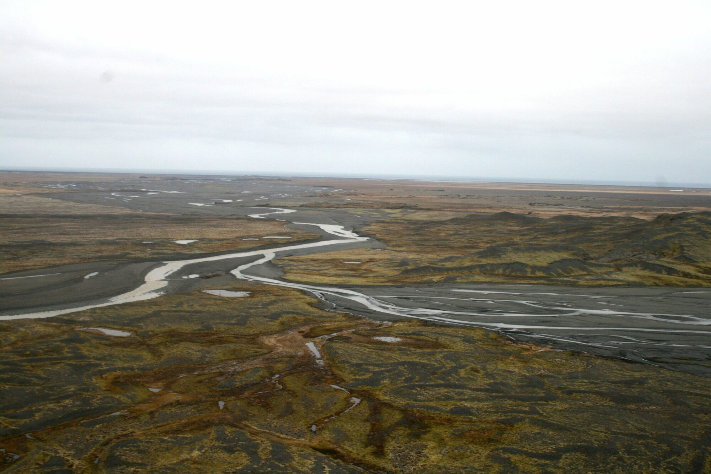
02 · Sagan
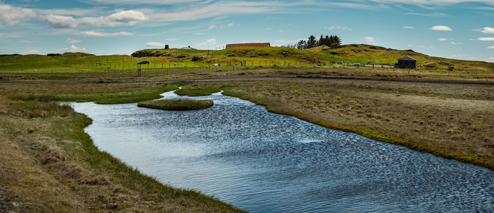
03 · Gisting
Húsin eru uppgerð í stíl íslenskra sveitaheimila á sjöunda áratugnum.

10 gestir í 4 tveggja manna herbergjum og 2 eins manns herbergjum, baðherbergi á hverri hæð, gestaeldhús.
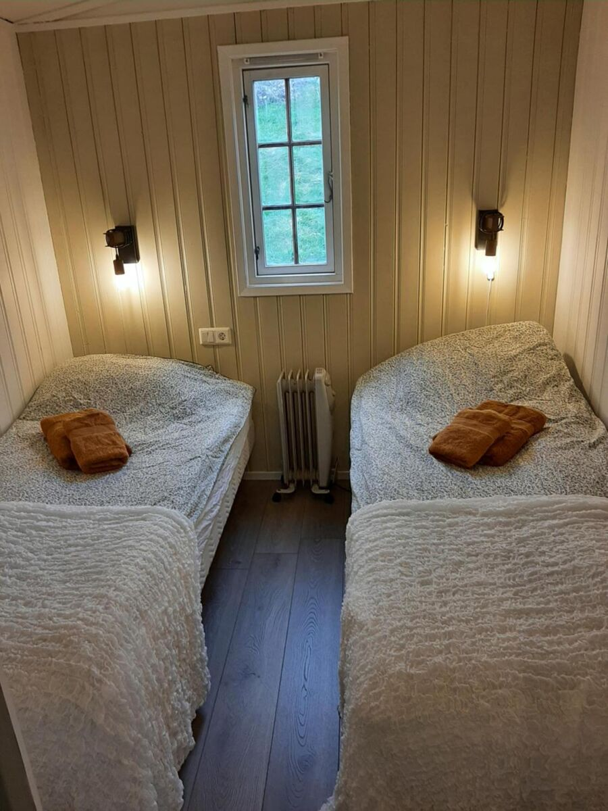
Í gamla fjósinu eru 2 þriggja manna fjölskylduherbergi og 1 tveggja manna stúdíóherbergi með eldhúsaðstöðu, 2 baðherbergi.
04 · Búið
Kindur, geitur, hænur, kornhænur, endur og grænmetisrækt. Kettirnir Karri og Lóra teljast líka til fjölskyldunnar.
05 · Við borðið
Veitingastaðurinn er í gömlu vélaskemmunni. Þar er morgunverður borinn fram með útsýni.
Allar upplýsingar um Jón Ríki eru á jonriki.is. Fyrirspurnir um kvöldverð: 783 0300 eða holmur@eldhorn.is
Fara á jonriki.is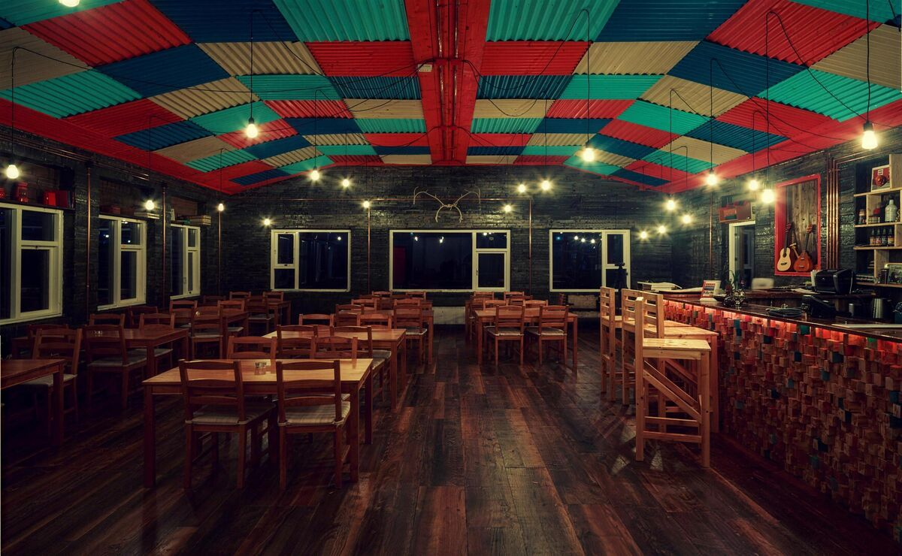
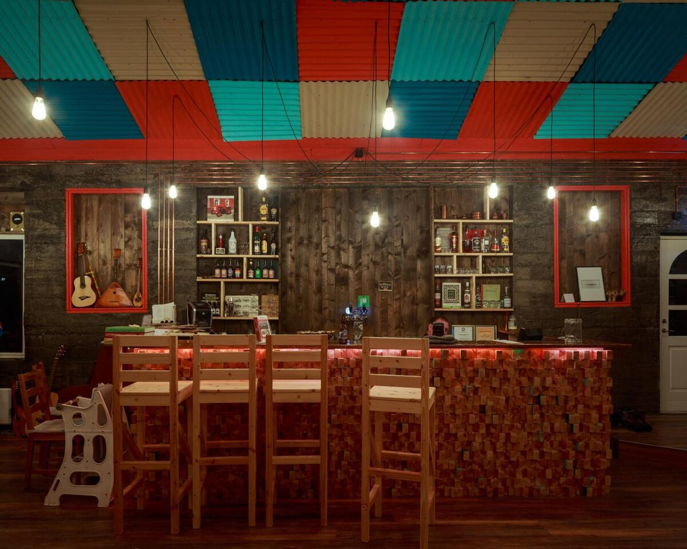
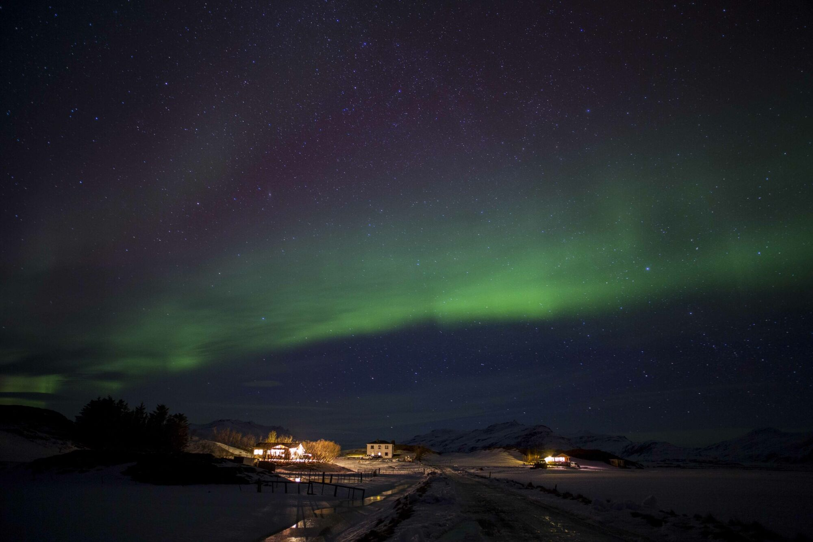
06 · Umhverfið
Gönguleið að Fláajökli liggur norðan bæjarins, gangandi eða akandi. Mólendi er til suðurs og vesturs, hreindýr og fjölbreytt fuglalíf.
Heitir pottar í Hoffelli
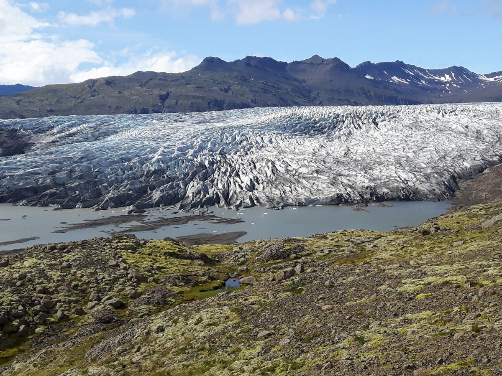
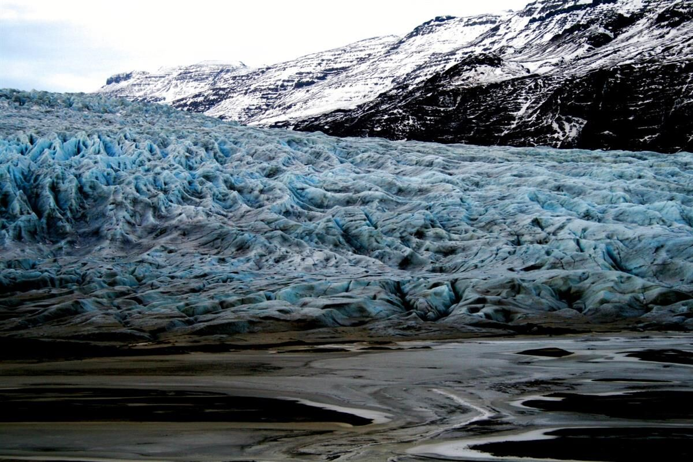
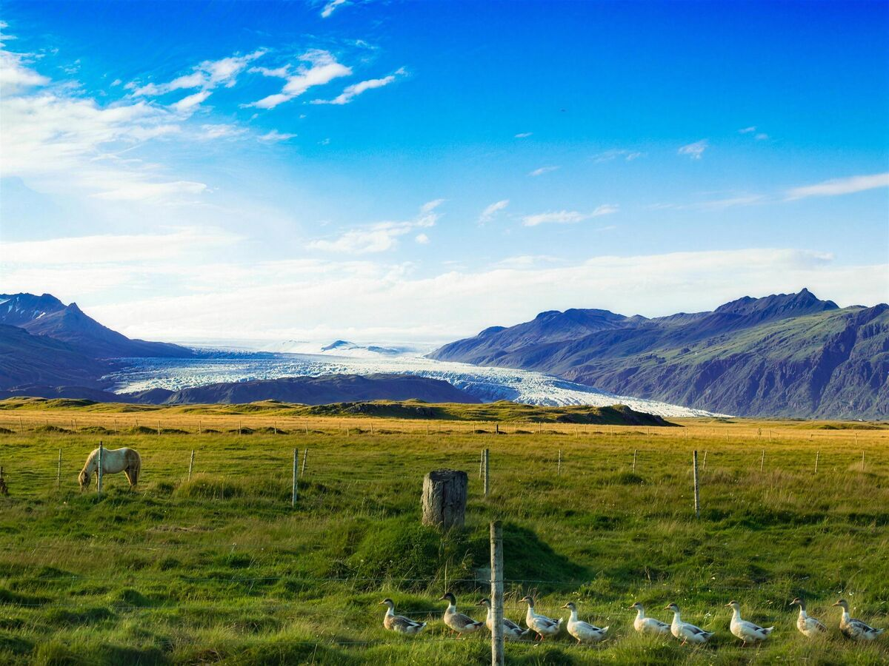
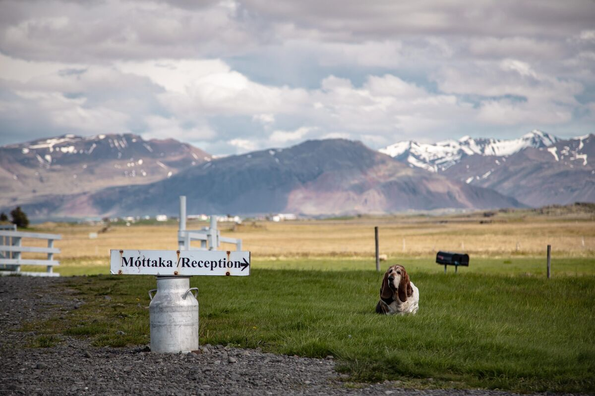
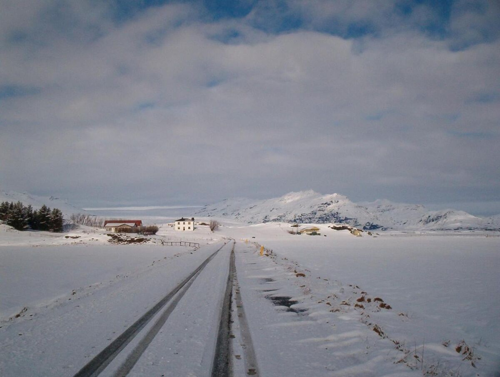
06 · Kortið
Frá bænum er stutt í allt það helsta. Vegalengdirnar eru mældar eftir vegi á opnum kortagögnum.
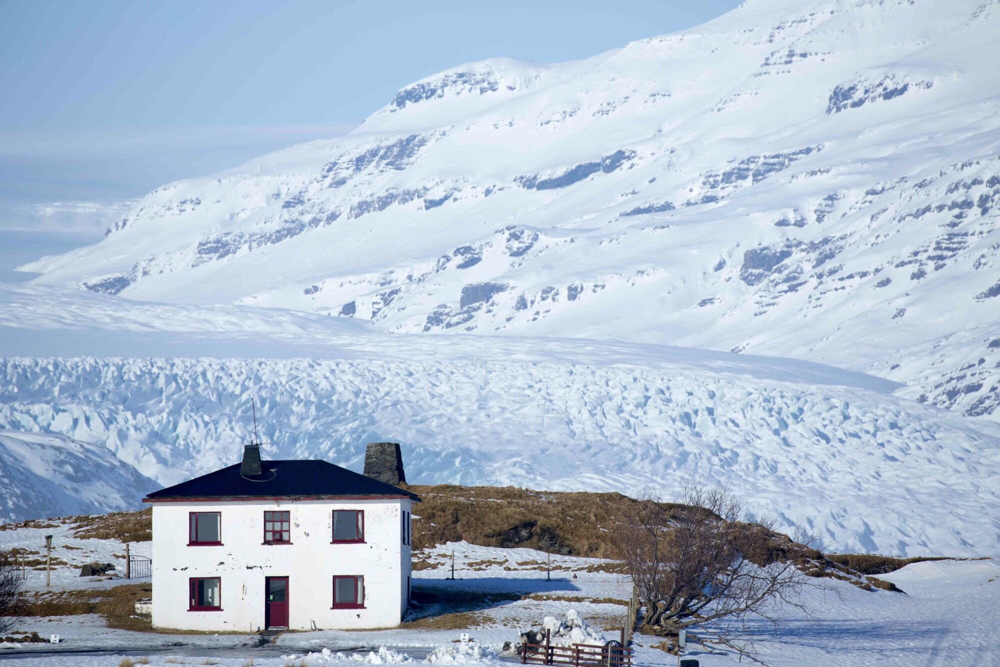
07 · Vetur
Innritun frá 17:00 · útritun til 10:00
08 · Umsagnir
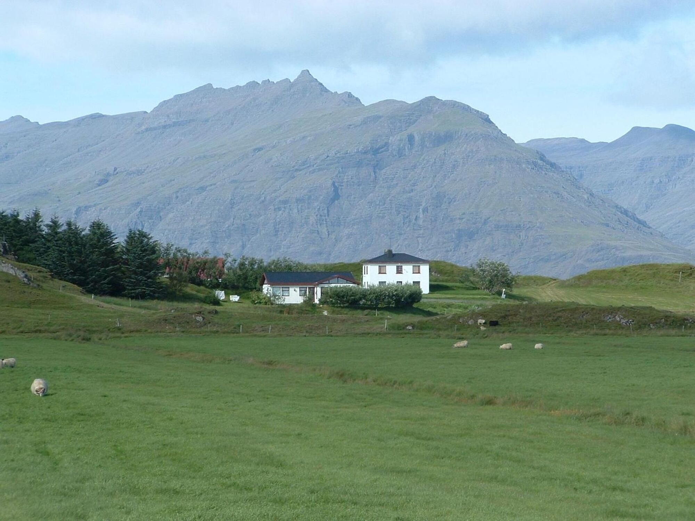